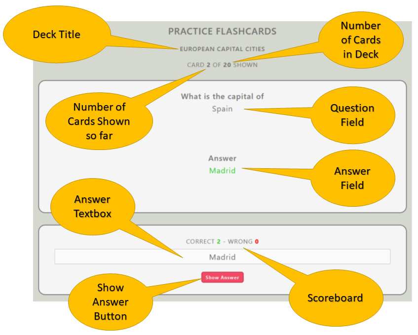
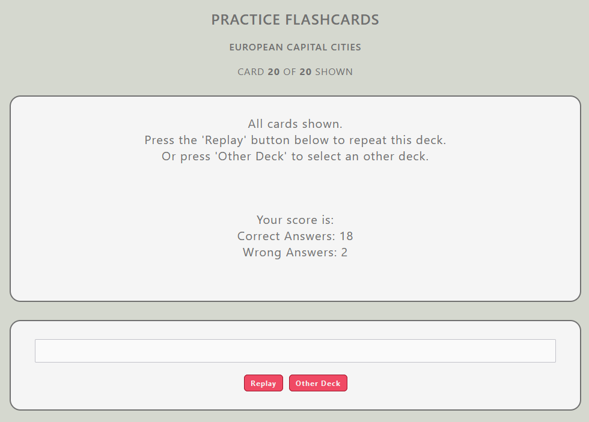
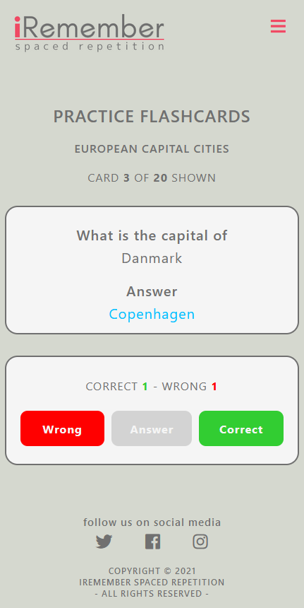
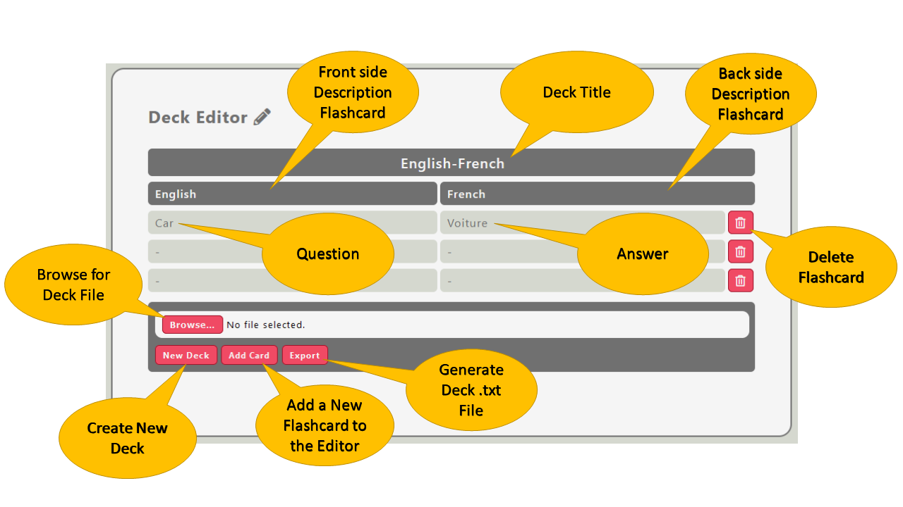

As a first-time user of the website, it's recommended you read this manual first.
We recommend you check out the 'Practice' page first to get familiar with the interface. The website has an example flashcard set (deck) included. Go to the 'Practice' page and click on the 'Example Deck' button. The page will open the practice interface on the screen. Simultaneously the flashcard set will be loaded and exists out of 20 flashcards created to check your knowledge of European capital cities.
It's important to mention the practice interface looks different on desktop and smaller devices (iPad and smartphones). The desktop interface uses direct input for your answer, which means you have to add your answer to the question directly into the 'Answer Textbox.' After pressing the 'Enter' button on your keyboard, the website will automatically check your answer.
Direct input is not convenient on smaller devices and is bad for the user experience. The 'Answer Textbox' has been replaced with 'Correct' and 'Wrong' buttons. Here the end-user has to tell the website itself whether he/she knew the answer to the question by pressing on one of these two buttons.
First, you read the question: What is the capital of Spain. If you know the answer, type it in the 'Answer Textbox,' then press the 'Enter' button on your keyboard. The website will automatically check whether your answer was correct or not.
In case you guessed the answer correctly, your 'Correct' score on the scoreboard will increment by +1. When guessed wrong, your 'Wrong' score will increment by +1. In case you don't know the answer, you have to press the 'Show Answer' button. The answer will appear in blue in the 'Answer Field,' and your 'Wrong' score will be automatically incremented by +1. To help you remember for the next time, you still have to type the correct answer in the 'Answer Textbox' and press the 'Enter' key.
When you went through all 20 flashcards, a final score will show up in the 'Answer Field' and two new buttons will show up asking you whether you want to 'Replay' this flashcard set or select an 'Other Deck.'
You can both use uppercase and lowercase letters in the 'Answer Textbox.'
Desktop users can switch to the interface of smaller devices by reducing the screen port width to smaller than 900 pixels. iPad and smartphone users automatically see the interface for smaller devices. Same as the desktop interface, you have to read the question first. If you know the answer, press the blue 'Answer' button. The answer to the question will show up in the 'Answer Field' in blue colour. The 'Correct' and 'Wrong' buttons will be enabled. The end-user has to press either the 'Correct' button in case he/she knew the answer or the 'Wrong' button in case he/she did not. The scoreboard functions the same as on the desktop interface. Also the 'Replay' this flashcard set or select an 'Other Deck' buttons will show up when you went through all 20 flashcards.
The 'Editor' page is made to create, adjust, and export flashcard sets. To create your own flashcard sets (decks), go to the 'Editor' page and click on the 'New Deck' button. Three new adjustable text fields will show up containing information about the deck.
Give the deck a new name by clicking on the 'Deck name' field. This deck name will also be the file name when you export the deck to a .txt file. For example, when studying the French language, you can change the deck name to 'English-French.'
Below the deck name are two text fields that describe the front and back sides of the flashcards. Adjust these fields. For example, rename the 'Front side' to 'English' and the 'Back side' to 'French.' Be aware these two fields also show up in the question and answer fields on the 'Practice' page.
Create a new flashcard by pushing the 'Add Card' button. Two new fields and a 'Recycle Bin' button will show up. Add the flashcard's question in the 'Front side' column and the answer in the 'Back side' column. For example, question (English) -> 'Car,' and answer (French) -> 'Voiture.' Be aware some characters cannot be used, the website will warn you about them by showing you a pop-up message in case you use them.
Delete flashcards by pressing the 'Recycle Bin' button next to the card and confirm you want to delete it.
You can save your deck by pressing the 'Export' button. The website generates a text file (.txt) containing the decks's content. Be aware you can open this file and adjust them manually. We strongly advise not to do this because it can cause error problems while importing the file into the 'Editor' or 'Practice' page. The created deck file can now be imported into the 'Practice' page.
If you want to adjust a deck, click on the 'Browse' button and select a text file (.txt) that includes deck content. Text files not containing deck content will be refused by the website. When a deck is selected by the user, click the 'Load Deck' button to import the deck content into the editor. You can now start to adjust the deck.
{kind=link}
{kind=link}
{kind=link}
{kind=link}